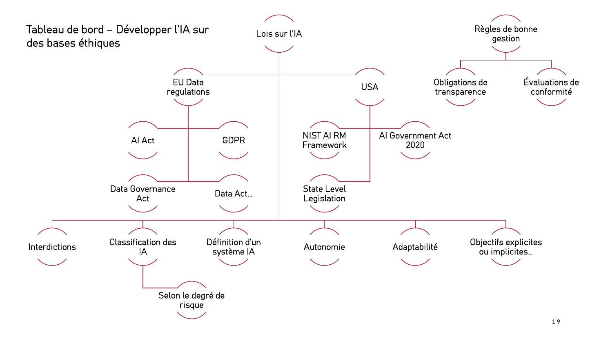
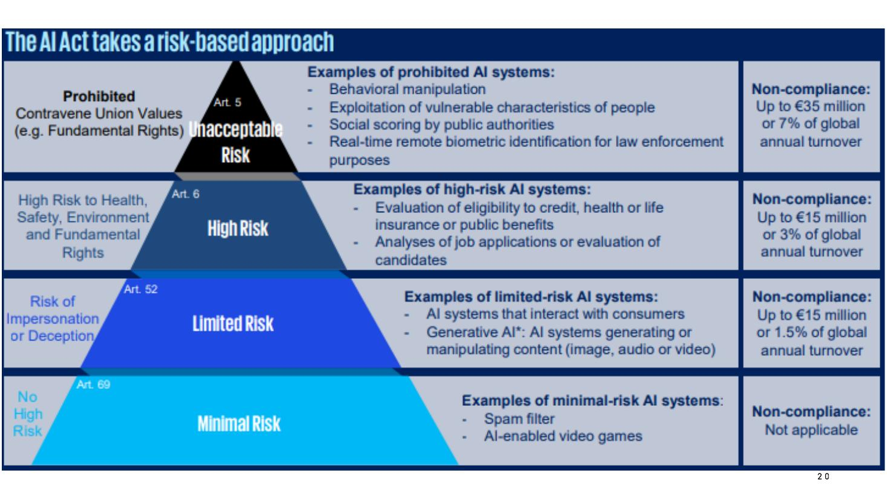

DIAPOSITIVES 19 et 20
La réponse juridique européenne, et ce qu’elle interdit exactement.

La carte tient les deux versants ensemble : la norme juridique (AI Act, RGPD, Data Governance Act, Data Act, législations d’État américaines) et la bonne gestion (transparence, conformité). Elle détaille aussi ce qu’il faut définir pour pouvoir réguler : la définition même d’un système d’IA, son autonomie, son adaptabilité, ses objectifs explicites ou implicites — et la classification des IA selon le degré de risque.
| Texte | Portée |
|---|---|
| RGPD Règlement (UE) 2016/679 |
Protection des personnes physiques à l’égard du traitement des données à caractère personnel, et libre circulation de ces données. |
| LED Directive (UE) 2016/680 |
Même protection pour les traitements liés aux infractions pénales et à l’exécution des peines. |
| EUDPR Règlement 2018/1725 |
Règles applicables aux institutions, organes et agences de l’Union. Aligné sur le RGPD et la LED. |
| Data Governance Act | Confiance dans le partage des données, disponibilité accrue, levée des obstacles techniques à la réutilisation. Soutient les espaces européens de données. |
| Data Act | Accès équitable aux données et usage de celles-ci. En vigueur depuis le 11 janvier 2024. |
| AI Act | Le règlement sur l’intelligence artificielle — ci-dessous. |

| Niveau | Ce qu’il vise | Mesure |
|---|---|---|
| Risque inacceptable art. 5 |
Manipulation comportementale, exploitation de personnes vulnérables, notation sociale par les autorités publiques, identification biométrique à distance en temps réel pour le maintien de l’ordre. | Interdiction jusqu’à 35 M € ou 7 % du chiffre d’affaires mondial |
| Risque élevé art. 6 |
Santé, sécurité, environnement et droits fondamentaux : accès au crédit, à l’assurance, aux prestations publiques ; analyse de candidatures. | Évaluation de conformité jusqu’à 15 M € ou 3 % |
| Risque limité art. 52 |
Risque d’usurpation ou de tromperie : systèmes qui interagissent avec des personnes, IA générative produisant ou manipulant image, son ou vidéo. | Obligation de transparence jusqu’à 15 M € ou 1,5 % |
| Risque minimal art. 69 |
Filtres anti-spam, jeux vidéo dotés d’IA — la grande majorité des systèmes. | Aucune obligation |
Deux remarques que l’exposé tient à faire passer. D’abord, l’AI Act n’interdit pas l’IA : il classe, et la base de la pyramide — celle qui n’impose rien — est de très loin la plus large. Ensuite, l’obligation la plus visible pour le public relève du risque limité : un agent conversationnel doit dire qu’il est une machine.
C’est la partie la plus concrète, et elle ne figure que dans les notes.
| Famille | Exemples donnés |
|---|---|
| 1. Techniques manipulatrices et trompeuses | Un agent conversationnel utilisant la voix synthétique d’un proche pour se faire passer pour lui — un système qui cache son comportement indésirable pendant l’évaluation pour le reprendre ensuite — la manipulation sensorielle par stimuli audio ou visuels pour altérer l’humeur. |
| 2. Surveillance et catégorisation biométrique | Collecte d’images de visages sur les réseaux sociaux sans consentement — système inférant la race à partir de la voix — suivi des expressions faciales pour la reconnaissance des émotions. |
| 3. Éducation et travail | Détection des émotions par webcam dans un centre d’appels — surveillance d’examens par suivi oculaire. |
| 4. Scoring social et commercial | Modification des primes d’assurance selon la conduite — détection de fraudes financières à partir de données comportementales. |
| 5. Moissonnage de données | Extraction d’images sur les réseaux sociaux pour identifier des victimes de traite humaine — moteur de recherche inversé pour correspondance faciale. |
Les exemples sont volontairement appariés : dans chaque famille, un cas manifestement condamnable côtoie un cas dont la légitimité se discute — la détection de fraude, la recherche de victimes de traite. C’est là que se joue la difficulté réelle du règlement, et l’exposé ne la masque pas.
L’orateur signale enfin le pendant américain : le AI Risk Management Framework du NIST — un cadre volontaire, là où l’Europe légifère.